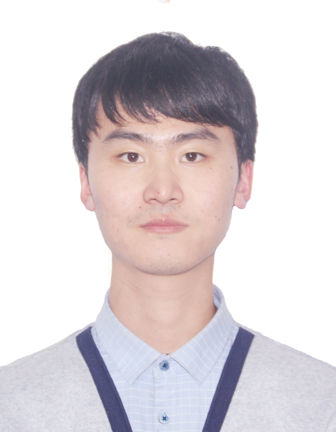

|
Shaoze Cui (崔少泽)
|
 |
Post-Doctoral (特立博士后),
School of Management（管理学院）
Beijing Institute of Technology（北京理工大学）
Beijing, China（北京，中国）
E-mail: shaoze-cui@foxmail.com
|
About me
I obtained my Ph.D. in Engineering from Dalian University of Technology in 2023. I also conducted joint research at the National University of Singapore under the sponsorship of the China Scholarship Council. My research interests include ensemble learning, imbalanced learning, medical data mining, and financial technology. Currently, I am leading the Youth Project of the National Natural Science Foundation of China (NSFC) and the General Project of the China Postdoctoral Science Foundation, and I have been awarded the B-level funding under the National Postdoctoral Program for Innovative Talents. Additionally, I am a key participant in several NSFC major and general projects. I have published nearly 20 papers in prestigious journals such as Information Sciences, Applied Soft Computing, Knowledge-based Systems, Annals of Operations Research.
我于2023年在大连理工大学获得工学博士学位，曾在国家留学基金委资助下前往新加坡国立大学联合培养。研究领域包括集成学习、不均衡学习、医疗数据挖掘、金融科技等。现主持国家自然科学基金青年项目、中国博士后科学基金面上项目，获国家资助博士后计划B档资助，并作为骨干成员参与多项国家自然科学基金重点项目、面上项目。在Information Sciences、Applied Soft Computing、Knowledge-based Systems、Annals of Operations Research、系统工程理论与实践、管理科学、中国管理科学等国内外重要期刊发表论文近20篇，其中SCI/SSCI收录论文13篇，谷歌引用超过600次.
Research
My research interests include:
Healthcare Analytics（医疗健康分析）
Business Analytics（商务分析）
Machine Learning and Deep Learning（机器学习与深度学习）
Imbalanced Learning（不均衡学习）
Current work
COPD risk assessment（慢阻肺风险评估）
Financial Distress Prediction（财务困境预测）
Readmission Prediction（再入院预测）
Multi-modal Machine Learning Method（多模态机器学习方法）
Under review
S. Cui, R. Gao, J. Kuang, et al. An interpretable imbalance ensemble classification method for readmission risk assessment incorporating multi-view perturbation and SHAP analysis. Decision Support Systems.
S. Cui, J. Kuang, L. Yang, et al. Multi-view ensemble learning framework based on respiratory sound data for early detection of COPD. Applied Soft Computing.
Recent publications
R. Gao, S. Cui* (Joint First Authors), Y. Wang, et al. Predicting financial distress in high-dimensional imbalanced datasets: A multi-heterogeneous self-faced ensemble learning framework. Financial Innovation, 2024, Accept.
J. Kuang, L. Yang, S. Cui*, et al. Understanding Social Support Needs in Health Question: An Answer-Enhanced Semi-Supervised Deep Learning Approach. International Conference of Information Systems (ICIS), 2024, Accept.
L. Yang, Q. Yin, Z. Yan, S. Cui, et al. Does the Night Give Power? Social Media Depression and Its Symptom Detection Considering Temporal Patterns. International Conference of Information Systems (ICIS), 2024, Accept.
R. Gao, S. Cui (Joint First Authors), W. Fan, et al. Integrating the sentiments of multiple news providers for stock market index movement prediction: a deep learning approach based on evidential reasoning rule. Information Sciences, 2022, 615: 529-556.
S. Cui, D. Wang, Y. Yin, et al. Carbon trading price prediction method based on two-stage adaptive ensemble learning. Annals of Operations Research, 2022, Available Online. (ABS 3 star)
J. Chang, Y. Ruan, S. Cui, et al. UFRC: A Unified Framework for Reliable COVID-19 Detection on Crowdsourced Cough Audio. 44th Annual International Conference of the IEEE Engineering in Medicine and Biology Society (EMBC), 2022.
H. Qiu, S. Cui* (Joint First Authors), S. Wang, et al. A Clustering-based Optimization Method for the Driving Cycle Construction: A case study in Fuzhou and Putian, China. IEEE Transactions on Intelligent Transportation Systems, 2022, 23(10): 18681-18694.
冯易, 王杜娟*, 胡知能, 崔少泽. 基于改进LightGBM集成模型的胃癌存活性预测方法. 中国管理科学, 2022, 在线发表. (国家自然科学基金委管理科学部A类期刊)
S. Cui*, H. Qiu, S. Wang, et al. Two-stage stacking heterogeneous ensemble learning method for gasoline octane number loss prediction. Applied Soft Computing, 2021, 113: 107989.
S. Cui, Y. Wang, D. Wang, et al. A two-layer nested heterogeneous ensemble learning predictive method for COVID-19 mortality. Applied Soft Computing, 2021, 113: 107946.
N. Wang, S. Zhao, S. Cui*, et al. A hybrid ensemble learning method for the identification of gang-related arson cases. Knowledge-Based Systems, 2021, 218: 106875.
S. Cui, D. Wang, Y. Yin, et al. A cluster-based intelligence ensemble learning method for classification problems. Information Sciences, 2021, 560: 386-409.
S. Cui, D. Wang, Y. Yin, et al. A stacking-based ensemble learning method for earthquake casualty prediction. Applied Soft Computing, 2021, 101: 107038.
Y. Feng, S. Cui. A review of emergency response: Present and future perspectives. Natural Hazards, 2021, 105(1): 1109-1138.
Y. Zhang, S. Cui, and H, Gao. Adverse drug reaction detection on social media with deep linguistic features. Journal of Biomedical Informatics, 2020, 106: 103437.
崔少泽*, 赵森尧, 王延章. 基于ADASYN-IFA-Stacking的再入院患者风险预测方法. 系统工程理论与实践, 2021, 41(3): 744-758. (国家自然科学基金委管理科学部A类期刊)
崔少泽, 邱华昕*, 王苏桐. 城市人才吸引力评价模型研究——以深圳市为例. 科研管理, 2021, 42(7): 60-67. (国家自然科学基金委管理科学部A类期刊)
国显达, 那日萨*, 崔少泽. 基于CNN-BiLSTM的消费者网络评论情感分析. 系统工程理论与实践, 2020, 40(3): 653-663. (国家自然科学基金委管理科学部A类期刊)
仲秋雁*, 李晨, 崔少泽. 考虑工人参与意愿影响因素的竞争式众包任务推荐方法. 系统工程理论与实践, 2018, 38(11): 2954-2965. (国家自然科学基金委管理科学部A类期刊)
S. Cui, D. Wang, Y. Wang, et al. An Improved Support Vector Machine-based Diabetic Readmission Prediction, Computer Methods and Programs in Biomedicine, 2018, 166: 123-135.
崔少泽, 王杜娟, 王苏桐, 等. 基于GMM-RBF神经网络的前列腺癌诊断方法, 管理科学, 2018, 31(1): 33-47.
Note: * indicates the corresponding author.
Full list of publications in Google Scholar.
Academic service
Reviewer
Annals of Operations Research
Applied Soft Computing
Artificial Intelligence in Medicine
BMC Bioinformatics
Computers in Biology and Medicine
Complex & Intelligent Systems
Expert Systems with Applications
Financial Innovation
Information Sciences
Journal of Ambient Intelligence and Humanized Computing
Knowledge and Information Systems
Neurcomputing
PLOS ONE
Sustainable Cities and Society
Scientific Report
Projects
国家自然科学基金 重点项目，面向人口老龄化的主动数智医疗健康服务管理研究，210万，主要参与人，2025.01-2029.12
国家自然科学基金 青年项目，基于多模态数据融合和不均衡集成学习的慢阻肺再入院风险预测方法研究，30万，主持，2025.01-2027.12
国家资助博士后研究人员计划 B档资助，基于不平衡学习与知识蒸馏的重症监护室病人临床结局预测方法研究，36万，主持，2024.01-2025.12
中国博士后科学基金 第74批面上资助，基于可解释多模态学习的慢阻肺风险评估方法研究，5万，主持，2024.01-2025.12
国家自然科学基金 重点项目，大数据环境下知识融合与服务的方法及其在电子政务中的应用研究，参与，2016.01-2020.12
Education
D.E., Management Science and Engineering, Dalian University of Technology, 04.2023
M.E., Management Science and Engineering, Dalian University of Technology, 06.2019
B.M., Management Science and Engineering, China University of Geosciences, 06.2016
Competitions and awards
Outstanding Graduate of Liaoning Province, 2022
China National Scholarship, 2021
“Huawei Cup” 17th China post-graduate mathematical contest in modeling, First Prize, 2020
“Huawei Cup” 16th China post-graduate mathematical contest in modeling, Second Prize, 2019
The third Graduate Mathematical Contest in Modeling in Liaoning Province, First Prize, 2019
Activities
Work experience
|